The content below is a mirror of http://www.dalmotorsports.com/cars.asp. I did not author the content. I'm just providing it here since the original site does not seem to be up much of the time.
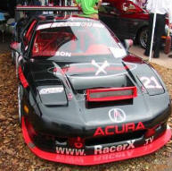
First I want to thank everyone who has contributed to this information; race teams, friends, news groups and my own R&D by product failure or success. I’ve listed topics in no particular order, other then thinking through the car from front to rear. None of the opinions within this document should be considered or used without personally assuming full responsibility of the potential consequences related your actions or use of knowledge.
Use at your own risk
The NSX community is unique; it’s made up of a high percentage of active car enthusiasts. I frequent other groups because of other interests, and have found that most of them are not as strong. Be grateful that we have a place like Prime that is so active you can almost consider it live, rather then needing to wait weeks or even months for answers or parts. I’m writing this because I want to give back to the community what I learned. My Race partner Vaughn Duarte shares this sentiment and has encouraged me to write this. It took a considerable amount of time to recall, review and write, so try not to get offended as this only needs to be a guideline of my opinions… and if yours are as strong, you can draw your own.
[NOTE: this document contains information about the DAL Motorsports Grand-Am Cup NSXs and the RacerXtream World Challenge Racing NSX. Both cars and series follow a totally separate set of rules. As not to be confused, we have tried to note as often as possible what areas apply to just one series/car.]
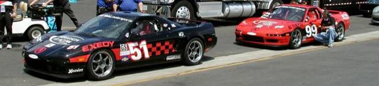
The front and rear bumper skins do not need the heavy metal crash bumpers for structural stability or mounting. (For racing only, and then this still assumes personal risk) Weight is the enemy of a good performing car. Even if you’re under weight in class, a rule of thumb is to whenever possible keep the weight between the wheels and as low as possible. I have witnessed scenarios where this metal structure caused harm. If removed, the front and rear bumpers are soft and collapsible to light love taps by a competitor, virtually un-noticeable… keeping the bumpers you literally increase the length of the car and taps result in a spin. In a race the metal doesn’t move back easily from a tire or radiator. If you stop 6 inches after the wall, your bumper will permanently push the frame 5 of those inches… with no bumper nothing hard gets permanently relocated. It’s arguable that I’m talking a fine line, and on the other hand I can imagine many scenarios where a bumper could help protect the car, but most of those scenarios would put me out of a race anyway. I also consider the safety angle, but I’m in it to win… and you don’t see GTS cars or F1 cars putting big heavy bumpers on because the sport is dangerous. Something to note: an aluminum rear bumper replacement exists as an OEM part number.
Ride height is an important challenge that plays a critical role in the handling ability of the NSX. Lowering the center of gravity on any car will aid its handling ability, but some adjustments must be made to restore Hondas intended suspension design. When lowered, the rear tire’s increase in negative camber and the toe arm rotates to a less then optimal angle that produces what’s called “Bump steer”. This is simply defined as; when the tire bumps up under the load of lets say a turn, the hub attached to the tire rotates further from the point that the toe arm is linked to, so it turns the wheel similar to a steering arm. In the rear the toe link is toward the back of the car, and will develop additional toe out as the tire bumps further. This is not a good thing, you want a car to keep its optimal settings, and the NSX likes a toe-in condition. The answer is to shim the toe arm near level, and where you get the least bump steer during usable suspension travel. When lowering, the front wheels lose their ability to get the negative camber they need, so you will have to buy the Comptech camber kit. Our class requires 17” rims and a spec tire. The car looked like an off road truck(left picture), and we were far from getting down to legal ride height. The problem was two fold. We are limited to -3 deg camber so lowering the car to legal ride height meant rubbing the inside wheel well and fender. In search of a 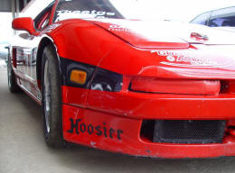solution, other then sectioning the NSX into a Trans-Am race car, Vaughn had an epiphany. He knew that our problems included a couple of issues: a) Our ride height was too high because we couldn’t get the car lower with the 17”, and b) Our ABS was not as accurate because we were using oversized wheels/tires(discussed next). He knew that the early stock NSX came with 15” wheels and with them we wouldn’t have the two issues… but we also knew the stock wheel did not allow the contact patch(width) we needed. We subsequently stumbled onto a miracle. The Touring class had a 15” rim with our spec tire (That measures exactly the same height as OE but also gave us the width of the 17”). We covertly tested this combination in a regional event at Barber. We had something… without even fixing the alignment the car was noticeably better handling. Armed with the fact that the Cadillac team was allowed to pay Hoosier enough money to make them a special 18” tire (While the rest of the class had to run 17’s), Pete Halsmer lobbied our request to allow the 15” rim and tire. The handling dynamic on the car is now incredible. Note; we don’t need to use the lower lip spoiler.
Tire/rims are critical on the NSX because the ABS system is one of the best production based designs. The ABS system is a simple design that makes complex adjustments based on both assumptions and feedback from your wheel sensors. When one or more tires stop rotating by a specific programmed percentage, the system reacts to control the braking faster and better then most of us. Now, depending on the percentage of speed differentiation, it will time or control at different rates as needed. This is a simplified explanation of what it does, but will help explain many of the wrecked NSX’s at track events. If you buy aftermarket rims and tires that don’t perfectly fit the originally designed ratios from front rolling radius to rear radius, then the ABS brain already sees a percentage of variation even when grip is perfect. It will first react too early because if it was designed to react at let’s say 5% wheel speed variation, and your rolling radius is already off by 3%, then it will be reacting at only a 2% variation in traction. It then takes control and makes adjustments based on the tire’s it thinks is on the car. Brake coefficient of friction, and tire traction also contribute to the ABS getting confused, but this scenario is not your typical street car. Self programmable ABS systems exist for race cars, but they are expensive. Large rims are cool, but be happy with your super light 15’s in front… DAL Motorsports uses SSR Competition wheels which are only 8 lbs. And un-sprung rotating weight is the worst place to have weight. On a large percentage of the televised race cars you will see 3-part BBS style rims that look very heavy. The reason for this is that in any racing and especially at the pro level you get a lot of rubbing and bumping. The lower cost 1-part wheels like the ones we use will bend very easy. The BBS wheels look heavy because they are, or at least the part you see. The center section is likely magnesium and the outer is a thinner and lighter aluminum. Ultimately they are nearly the same overall weight, but the 3-part rim is much stronger.
Compliance is best defined as rubber bushings flexing and compressing when put under a heavy load like cornering. The negative result is that all your perfect alignment settings flex to less then perfect because of this rubber. The rubber is there to absorb bumps so the driver doesn’t fell like they are in a junk box, but the rubber doesn’t belong in a race car (Get in one… they sound like rattle boxes). I will say that the NSX is stiffer then most, but eliminating this compliance can do wonders for your handling. We have 16 suspension locations that fit this compliance category. Comptech is marketing the 4 most important locations. The rear beam and the vertical compliance lock. I’m going to start with the vertical compliance lock on the front suspension; the part is designed to stop this NSX unique assembly from rotating. If you read the hard cover NSX book this assembly is described as a feature that improves braking by counteracting the toe out compliance by producing toe in. You see, the NSX also has another unique suspension design by not only incorporating Non-compliant ball joints where the “A” arm connects to the wheel hub, they also use ball joints where the front of the A arm connects to the frame. This eliminates all but one compliance joint on each arm. Under heavy braking the front tires want to push back and use up all the rubber compliance. Since this compliance is only on the rear of the upper and lower A arms (where it connects to the frame), the tire wants to toe out as the front side of the arm stays stationary. The NSX featured vertical compliance rotates the tire back in to minimize the differentiation. So one might say that it may be counter productive to lock one area without the other. (More on this later) In the rear both sides of the A arms have compliance, in addition to the toe arm. The Marketed Non-compliant rear beams give less compliance, but are not fully Non-compliant. They use urethane that is harder in durometer then rubber, so it flexes less = less-compliant rear beam. Most compliant locations move spherically, not just rotationally. They rotate and twist because they are on different planes. Because of this spherical motion, the harder the rubber, the more it will bind the suspension from working properly… that’s as bad as having compliance. Now just the rear beam shouldn’t bind your suspension, but a job worth doing is a job worth doing right. On a race car all of the compliance points need to be replaced. On dedicated race cars all of these suspension points are either uni-ball joints, heims, or spherical bearings. It takes a lot of engineering over 100 parts and $4000 to make an NSX non compliant. But the results are jaw dropping. Note: Be sure to check your rear ball joints for play or slop. If you have play, they should be replaced for better handling.
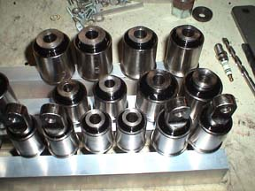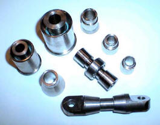
Radiators When you’re trying to keep your engine revving between 7000 and 8000 RPM every possible second in a three hour race, the car is past its intended cooling capacity. The first thing we tried was playing with the thermostat, then we purchased a replacement radiator that claimed double the cooling capacity, we added oil coolers, fans, and even built an under-tray to reduce turbulence behind the radiator. Right now we are just under the danger zone with temperature. The best solution is a vented hood, but our class wont allow it. I’m not comfortable sticking with what we have. The way I see it, we have two more options A) I’m not to confident in the OE water pump, so I will try to increase flow with a secondary electric pump. B) I can still replace our radiator with a version where the manufacturer claims 4 to 6 times the cooling capacity. If you have the intentions to get an RTR nose, splitter/under tray, and hood, they have incorporated an angled radiator (Near 7” thick) for more down force. Note: Don’t trust your OE gauge, maybe not even your OE sending location. I’ve been nearly out of water because of a leaking head gasket, and the OE sender/gauge will only see the steam temperatures.
Sway Bar We find that with good horse power the NSX wants a lot of front sway bar. We also run no rear sway bar. If your running a race car I suggest buying the biggest front bar you can get your hands on, because it’s not big enough. The largest bar I’ve seen on the market is 1” or 1-1/8” bent bar, and I know of a few one-off 1-1/4” bars made for racers (See DALI). Realtime Racing used a 1-1/2” straight bar called a knife edge bar (Because of the rotating knife-edge arm that acts as adjustability). 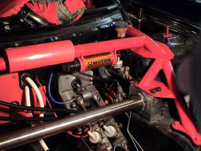These bars are commonly used in Trans-Am cars, and are welded to the front part of the roll cage. When I first saw one, I didn’t even know what it was. A straight bar has much more torsional rigidity then a bent bar, and the thicker you go, its strength rises incrementally. When building my World Challenge NSX, Realtime advised me that 1-1/2 Inches wasn’t enough (I’m sure a joke fits in here somewhere… anyway) so I built one out of 1-3/4”. This is the WC car. The Nickel bar running across the front of the car is the sway bar. It’s held in place with a billet bearing block and large stainless spherical bearings. Needless to say again that the 1” bars on the market are not enough, but buy and put on what you can get.
Our Grand-Am class posed another problem; we could only have a bar that fastened to the stock location. More hours of Engineering- instead of using the weaker bent bars, I relocated some components and designed overcomplicated billet bearing blocks to utilize a 1-1/4” straight bar. The blocks house spherical bearings so the bar doesn’t have any compliance loss, and won’t bind under chassis flex. The ends are splined for custom bent billet arms. The bars cost me about $1300 in parts, 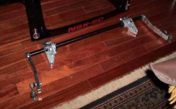 so I’m not thinking it’s very marketable, but then again winning is priceless to those of us addicts. With all of the suspension points and sway bar having bearings, I can jack the front of the car off the ground and easily make the opposite wheel rise as I lift one side. That’s how it’s supposed to work, if you try this on a stock NSX with compliance resistance and paper clip thin sway bar… it doesn’t move.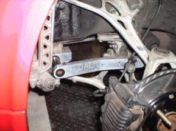
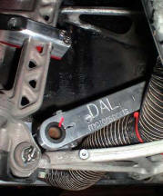The picture to the left also shows the vertical compliance lock
Brakes are mysteriously good on the NSX, the reason I use the word mysterious is that the fronts are single sided dual piston with relatively small rotors, and the rears are single piston. Compared to the competition this is one of the worst combinations (in theory). Many cars (Even cars like the RSX) have dual sided pistons, 4 pistons, and larger rotors. It’s a wonder we consider the brakes good? I think it is related to the mid engine design, coupled with the fact that we have a race level 4-channel ABS system. Unfortunately when you start racing the car, the weaknesses revile themselves. After you add larger slicks, race pads, and higher speeds, it becomes apparent that the NSX is lacking brake potential! Partially due to the loss of a modern crutch… the ABS system, and partially due to the fact that our “wusy” brakes should have never felt as good as they do. 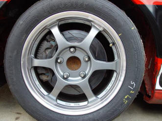If your rules allow and you can afford it, see RTR for a Bosch ABS system. I will add that one of the first mistakes people make is to fit the largest brake system they can find, 6 to 8 pistons with monster diameter and wide rotors… many times with equal size in the rear. Brake systems should be only as much as you need for the worst of conditions, because the brakes are one of the worst places to have weight. In motorsports like NASCAR, they will change rotors and brake systems depending on what they need for that particular track. This is more important then you think. Dyno your car before and after a big brake upgrade, and you will see a horsepower loss at the wheels… and that’s only measuring the smaller rear rotors. Were not all brake experts (I’m not either), but if winning is more important then just racing, you should consult an expert or fund the experimentation yourself to get only as big as you need. Back to racing- I find that when set-up for the best handling, the NSX will want to lock the rears first. You may be able to find a front to rear pad combination that will change the bias in the rear… if not, you will need to add (2) brake bias levers in line for the dual channel rear brakes. Fortunately the brake lines go right past the driver’s seat on the inside of the car. Brake line bias is the wrong way to adjust bias, a balance bar is optimal, but that requires a complex addition of dual masters. This eliminates the power assist, requires bracketry, linkage, and a new way to incorporate ABS. If you’re building a World class car, and the rules allow this mod, it is unavoidable. (If you’re that person, I can provide billet brackets for Tilton dual masters w/balance bar).
Another subject is Brake pads… The track is no place of OE brake pads. There are a lot of aftermarket pads that are better suited for autocross or tracking. DAL uses Cobalt Friction blue front with Hawk blue rear. The Cobalt’s are a better on the rotors than some aftermarket pads. Speaking of rotors- we can crack the familiar aftermarket rears in one race… don’t even think of using them in the front. Use OE, or even better a two part rotor like Stoptech with curved cooling veins. When you go to a race setup, investigate other rotor manufacturers with the same bolt patterns. I know a famous racer who doesn’t use his *Free* Brembo rotors (About $300 each), he pays near $800 each for Alcon rotors. Material, design, and treating are very important in a super brake system. Brakeman rotors are an in-between to Brembo and Alcon leaning closer to Alcon, and are at near Brembo prices. If allowed, carbon rotors are even better. Fluid- I use Motul if I don’t have heat issues and Castrol if I do. DAL uses ATE Super Blue Racing Fluid. Brake ducts are important in the front (Usually can’t get enough heat in the rear). You want to point the air in the center of the rotor, to be drawn out with the veins. Not an easy task, until you have a race car and can remove some things in the way, and add an under-tray for protection. Back to the ABS system- In a race car that allows ABS, unfortunately you must use it to be the most competitive (even if you need to add weight)! As mentioned earlier they are expensive $10,000 and up, but are unbelievable. When programmed right with good brakes, you can use both feet on the brake pedal as hard as you can, and slow before a turn as good as if you were trying. And if it rains, competitors won’t understand why you and the other ABS cars are lapping them. *Recent information: I’m looking at brake modulation test sheets from Tex Racing (They do more then 50% of the Winston cup cars). Their brake dyno runs from 125 to 80 mph consecutively and records speed, brake torque, air pressure, hydraulic pressure, and rotor temperature. The Lighter and less expensive Brake Man F4 caliper out performed the $2000 each Brembo GT monoblock caliper (Previously the industry standard for best) The F4 ran 30 degrees cooler, required 100lbs less line pressure (On average), made a flatter torque curve, and most important had a much more consistent torque vs. line pressure between runs.(this means less caliper flex)
Brembo monoblock Brake Man
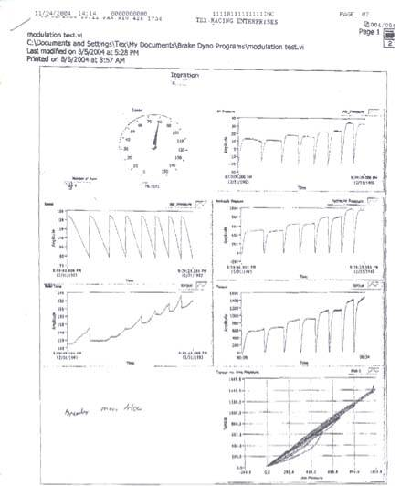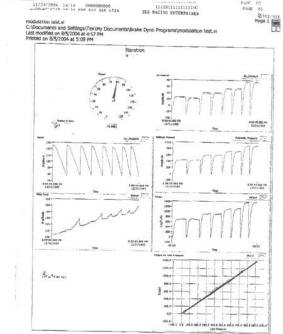
A common misconception is that if you can lock-up
your brakes, you have as good of a brake setup as
you can get. That’s not a true statement- Here’s an
analogy; When using the heater controls in many cars
it’s difficult to get the setting from not being too
hot or too cold. But in many current cars you have
increased adjustability that makes it easier to get
what you want. Brakes are the same, all of them can
lock the wheels… the better ones have more
adjustability before they do lock. If you have two
knobs; Knob (A) representing OE or bad brakes,
(having) 3 clicks before full. Knob (B) a good
performance brake has 10 clicks before full. Think
of full as lock-up with your brakes. With knob (A)
you can go to click 2 before lock, but one click
more and your skidding. Knob (B) you can safely go
to click 8. That’s 4/5 braking capacity vs. 2/3
braking capacity. In addition to the higher
percentage of usable threshold, you have 2 clicks
before a locking condition, giving you a 50% larger
safety margin.
Mathematically you can get infinite variability
before lock-up, but using realistic technology we
have limited solutions to work with. I’m not sure if
most people know that lock-up is actually first due
to an imperfection of rotor surface, tire flat spot
or road surface variation. Your pressure threshold
can stay consistent until it hits a high, low, rough
or slippery spot. Now with the road surface or
tires… just avoid water, oil and flat spotting your
tires. But with brakes, the HP manufacturers go with
larger diameter rotors so they can benefit from
leverage, and don’t have to push as hard because of
being towards the center of rotation. They also
spread the clamping between two or more pistons. And
last, they float the rotors from the hubs so they
can absorb imperfections of the hub or the rotor
surface. All of these methods help miss the high
spot. More driver adjustability (Like mentioned in
the first paragraph) will also allow you as a driver
to closer flirt with that threshold. ABS technology
aids after the lock-up has already happened. A new
technology is a relief valve that absorbs spikes in
the brake line pressure from those high spots. Some
are experimenting with this now.
Clutch Street- I like the OE clutch for its mild manner. Note: if your reinstalling the OE clutch, it not only needs to be initialized, it first needs to be “loaded”. Initialization is the spring loaded release for proper seating. A new clutch is already loaded, so even most dealers don’t know to do this step. They typically install new clutches. This tip might describe why so many who installed good condition clutches had problems putting the trans in gear. One would assume their clutch was bad, and replacing it with new would solve their problem. The 1991 manual explains how to “load” the springs, but it didn’t clearly explain why.
Track car/Race- I like the Exedy single or
dual Cerametallic for its strong grip (It may be a
little aggressive for many streeters), low weight,
balance and long lasting. (Some have complained
about T/O bearing noise)
If weight and size is unlimited and you have
high horsepower, I would use a mini Tilton triple
disk. The track/race clutches are already borderline
for using the OE clutch master and slave, so I would
suggest replacing them if reliability is important.
For the Tilton you will need a new Tilton slave and
master. The slave is slick… it replaces the throw
out bearing and is easier to do trans swaps. The
master requires new bracketry and linkage. (If
you’re doing this expensive conversion, I have the
brackets. I also have the custom order Tilton part
numbers for the slave, flywheel, master and clutch)
Exedy Single w/flywheel
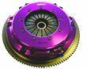
Exedy Dual w/light flywheel
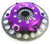
Tilton Triple w/light flywheel
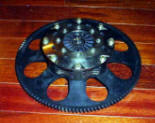
Roll-Cage The NSX is state of the art in design and can only be compared to exotic limited production cars like some Ferrari’s. That’s not to say that other cars like Porsches, or Corvettes aren’t as competitive or even faster, but that’s only because of Horsepower or aftermarket modifications. One of the features of the NSX is the all aluminum chassis, frame, and cockpit. 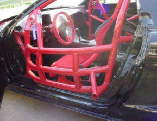This light weight design is made up of extrusions, and formed aluminum sheet welded together to create a strength far greater then the sum of just one of its parts. The NSX is one of the stiffest chassis sold, and one of the contributors to it’s good handling characteristics. Quoting something I read. An NSX is so ridged that if you put it on 4 jack stands, it will rock because the floor is likely not level enough. Though that has since been proven, the NSX is not ridged enough to fully support race conditions especially with high horsepower… No car is. With this in mind, a cage needs to be designed not just for safety, but for chassis strength. Since your NSX is likely much lighter then your weight requirements, add extra reinforcement to improve rigidity. Especially in the front. I wish I had the picture in mind to insert here- It’s a straight-on shot of the Realtime NSX coming out of a turn with good traction during a race. If you look at the plane of the rear wing compared to the twist of the roof and front nose, you would think it was a top fuel drag car. Supporting evidence would be the new NSX that Realtime built for the 2003 season. Most of you have never seen this car because it never made it to the track, as Peter transitioned to Nissan. The cage in this new NSX was nothing like the first car;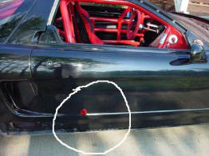 its focus was similar to mine. (World Challenge NSX pictured)
Notice the braced tube; this is used as a jack point. If the tires are flat a jack won’t fit under the car, so we keep a steel insert in the pits, that can be put into this tube for jacking the car up.
Another benefit… that apparently happened during a race with Peter Cunningham as a driver- A competitor started pushing or “rubbing”, and this cage mounted device refused to move like the thin aluminum door and cut that competitors tire. This gives a new meaning to the saying “He rubbed me the wrong way”
A part I could supply to any future cage builder is a bolt on plate kit. My cage fabricator told me that it would cost me as much money to make all 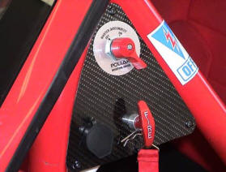the mounting plates, as it would to build the cage. So I measured and drafted professional looking mounting plates that are laser cut. I put (4) rectangular plates in the cockpit, with equal thickness backing plates to sandwich through the extruded frame rails. Some NSX’s have hole-sawed the bottom of the frame and only bolt through thin sheet. (I don’t believe this is safe or good for performance from rigidity). The JGTC cars are required to weld the cage to the car, so they use a combination of bolts carbon fiber plating and epoxy to get a chemical bond with the chassis. Our plates for the (4) strut towers are also well thought out, and can be ordered for OE style or Moton style shocks. The front struts tie into (2) front frame plates. All plates are pre-drilled for a perfect fit. (See pictures under Sway bar (6)). Here’s a picture showing the detail that went into the external safety controls that we put on both sides of the cars. Corner workers have complimented us on this feature. The third component in this picture is an external port for our data acquisition.
Suspension- If you can afford them, Moton Triple or Quadruple adjustable shocks are the best. I can’t take credit for finding these, but I can tell you why the claim of best is more then opinion. I will start off by stating that more then 50 cars in the World Challenge use them. Truthfully many shocks can be adjusted to work equally, but the difference is what it takes to get that adjustment. Most shocks have a small range of adjustment within the good working range you need for a particular track or condition. Penske brand for instance is an icon in racing shocks. They can be adjusted like most others, but within a short range, beyond that they need to be disassembled, re-shimmed, and then checked on a shock dyno. The Motons creator who started with JRZ (The only other shock with this design), developed a valving using an adjustable orifice rather then shims and shim pressure. The end result allows you to fully tune your suspension, rather then just to the best place before re-valving. So simply… the Motons are better because they are adjustable in the real race world. I’m not Dale Earnhart Incorporated, and have many other things to tune in a short time. And if it rains, you can adjust further and faster then many of your competitors… If it rains during a race, they are dead in the water (While we can adjust while changing tires). Rumor has it that Evringham uses them to tune with, then dynos them on a full range shock dyno, so he can duplicate the valving in the shocks that everyone sees the cars racing with. Motons use spherical eyes at each end, so you will need conversion mounting brackets. I can supply these, along with the eyelet bushings.
Alignment- In the beginning I use to change toe for super speedways that favored long straights vs. tight road courses with lots of curves. But I systematically have proven to myself that the best overall performance for the NSX was to favor the handling vs. top speed. After all it is a handling car, and the alignment changes hardly affected top speed, but drastically effected handling. On a race car- Max out your caster (Max is most amount of angle), because max will increase your negative camber under turning conditions. Also Max out your negative camber… well this is relative to what numbers you can get. Even your average weekend warrior would benefit from –3 degrees in the front and rear. But if you start using offset ball joint bushings and offset spherical bearings, you will see gains all the way to as much as –6 degrees in the front. I must warn you… don’t get fooled by tire temps, or conflicting advice. Try it yourself. As you start going beyond –3 your insides will show high temps because of the straights, but if you take the angle back out to even the temps, you will be hurting your cornering ability. The skid pad will tell the truth. Toe- in the front I suggest 3/16” total toe out, and ¼” toe in at the rear.
Aero (World Challenge) - A big rear wing with a true airfoil design is the highest priority. The wing design will give down force at lower speeds, and actually have less drag. Put it higher then the roof, and extend it beyond the bumper 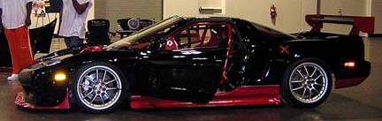if you can. I would suggest the wing from RTR if you have high HP. While you’re at it their trunk lid also gives down force. Next, I would focus on getting the car low especially in the front, and incorporate a strong splitter (preferably a carbon fiber sandwich honeycomb structure). If your splitter doesn’t double as an under tray, that should be next for extending the flat floor of the NSX.
I also add a solid steel or aluminum plate (Depending on weight), as a further flat bottom extension under the gas tank. This adds additional safety and is the best place for weight. Angle it up towards the back for added down force. A rear angled diffuser would also be good, as the OE bumper is like a parachute without the OE muffler. A less obvious modification would be a vented hood and front nose combination for more down force. And the least obvious are side skirts with a large side extending lip for down force in the turns. Everything I just mentioned has been mastered by RTR, so that is where I would start for the splitter/under-tray, nose, side-skirts, trunk and rear wing. The fuel cell plate I can provide. I would try Science of Speed for the diffuser or rear wing if not Realtimes.
Fuel System- Our stock NSX cell is better then any other OE cell I have seen. It has hinged doors to trap fuel in a small compartment 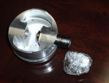around the fuel pump. This design is made to capture fuel in the turns when the tank is low. Race cells are made like this. We can drive past “E” on the gauge… even in race conditions. I have a championship SSC Neon that starves above a 1/4 tank. If maximum fuel level isn’t an issue, I would add fuel cell foam to help minimize fuel sloshing (Not in the small hinged compartment). This sloshing can get a race car loose. For most applications I would suggest the HP Walbro pump, unless you’re above 500 hp. At this point I would use the Expensive Bosch pump. Not many of the drag race pumps will handle continuous road race duty. (They overheat) If you’re running more then a single shot of Nitrous, defiantly replace the fuel pump. This is what happens to a piston when you 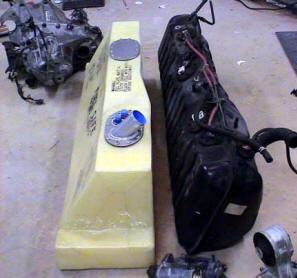run out of fuel capacity while using Nitrous (left picture).
The WC car made big HP and could use as much as 25 gallons in a single race, so the stock 18ish gallons wouldn’t cut it… even if your class did allow stock. I developed a Kevlar design with all the best features that utilizes every inch and fits as much as 26 gallons. It’s fabricated from my drawings by the best in the business. (This cell would require the floor plate mentioned in Aero(12)). If you’re running High HP, use bigger fuel line. A twin pump design would decrease your chance of a DNF. You should cross over your fuel rails in more then one location, to insure even fuel delivery. Return to the tank through a quality regulator and use #8 line. Replace your injectors with 440’s even with minimal mods, go higher when needed. My favorite unleaded fuel that’s commercially available is Phillips B-42. I had a sponsor that funded a dyno test with all the unleaded fuels, the B-42 was best for detonation, and was tunable to make the best HP. It’s also inexpensive, but not likely at your local road course.
Engine Mounts- Even the stock HP will eventually tear the OE engine mount. 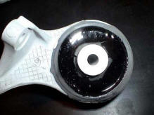They are a webbed rubber design that won’t handle much abuse. I have seen continuous exhaust cracks due to their flexibility. You can easily make your own polyurethane mounts, by purchasing a two part polyurethane, sealing one side with good duct tape, level them before pouring, and let them dry. The tape will come off easy, and you can trim any overflow with a razorblade. Don’t forget to put something down to protect from runoff. Etching the OE rubber before pouring would be a good idea, but not necessary as the liquid urethane will seep and harden on both sides of the mount. We can do this for you, but it would cost about $200 a set because of time and about $100 in materials.
Oil Conditioning- Honda uses a specific viscosity oil that works best for street driving, you may have noticed that they suggest a thicker oil in California and in warmer climates. In a racing engine, especially road racing, your temps sustain high heat (As high as 350+ degrees) that thins your oil beyond what the factory wants. You may have noticed your pressure decreasing as your engine gets hotter (This is normal). But when racing the oil can get so thin that you risk it’s ability to maintain the pressure/volume needed to do it’s job as designed. Many of your engine parts never touch metal to metal, they actually ride on a thin layer of liquid oil, since this oil is incompressible, all you need is a thin amount provided the volume and pressure stay constant. When the oil thins, it flows out of its restricting gaps too fast. If the oil isn’t able to reach one of the bearing surfaces for whatever reason, the metal to metal will burn before you can say Oh Shi?. This is why any performance engine builder will suggest 20/50 (ie. Valvoline Racing Oils) or other synthetic 15/50. When up to operating temperature it will be the viscosity the engine was designed for. Note: always bring your engine up to operating temperature before putting it under heavy load. I didn’t always have the patients to wait, and would fool myself into thinking the engine is warm already, so I use a unique sending unit in my radiator (A trick I got from a veteran racer), the sending unit senses 6 pounds of pressure before the light (I keep on my dash) goes off. See, water temp isn’t always a good indicator that it’s ok to push the engine, but you’re OK when the water actually gets the engine and system hot enough to raise the pressure. 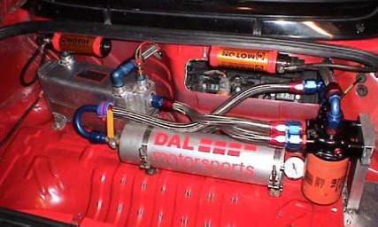Note: The OE oil pressure gauge is another one that I wouldn’t trust. The temperature of your oil can also climb way above your water temperature, and 20/50 can even get too thin. The other side effect is that the hot oil helps over heat the water cooling system. You should defiantly add an oil cooler. My favorite choice is an 85,000 BTU water to oil cooler. It’s both expensive, and will require custom engine adapters. But it’s the only cooler that will allow me to over cool, so I can adjust the temperature depending on track conditions. See, too cool will rob you of power, and too hot will do the same. My target is around 250 degrees. The cooler I’m using is the only water to oil cooler that has the capacity to handle the NSX. And any air to oil cooler wouldn’t allow me extreme adjustability.
I would also highly suggest an Accusump to any NSX’er that tracks their car. When in sustained V-tech, most of your oil is in the engine and not in the pan. If the oil pick-up in the pan starves for a second… your engine is done. Preventative insurance (Especially needed if you track High banked ovals) get an Accusump! An Accusump holds more oil (our cars have 3-qt versions), the oil is pressurized by the stock oil pump against a piston and spring (Like a syringe). If the pump stops pushing for even multiple seconds, the spring will push back to keep your oil flowing with pressure. Genius design. Shutting a valve before shutting the engine, will allow you to maintain pressure in the canister, so that you can open the valve and pre pressurize before starting your engine. With our oil cooler, #12 lines, Accusump, and filter adaptor with Knob adjustable oil flow rate (For cooling), gives us near a 10 quart oil system. Another strong suggestion, but one I can hardly suggest unless your engine is out anyway, is aftermarket oil gears. A known weak link in engines running in the upper RPM range. We also use a hinged baffled oil pan, but that’s probably overkill. Unfortunately our oil system with AN plumbing and block adaptors costs near $4000. I would also use synthetic oil or race proven non-synthetic (ie. Valvoline VR1), however if building a fresh engine first break it in with non-synthetic oil. That’s how good synthetic oils work! they wont allow the rings to seat properly. Something else I do when I change pump gears, is add a .060” (or less) washer on the inside of the spring loaded piston that governs the oil pressure. The washer acts as a shim to slightly increase your oil pressure about 10lbs. Be sure to use a washer that is nearly an exact fit.
Rerouting- A lot of stock NSXs have had problems with oil spitting out of the rear valve cover under heavy tracking at high RPM. Honda acknowledged this design flaw by redesigning the rear valve cover on the later cars. Some have never experienced this... some don't drive hard enough. I have permanently solved the problem on all of the cars including our race cars. The problem- (Likely accentuated by your new driving capabilities or style) In V-tech your oil is routed to the heads (Via solenoid valve) to facilitate the hydro lock of the rockers below the more aggressive cam lobe. This design requires massive amounts of oil that leaks profusely like the oil pressure at the crank bearings. The rear head actually fills with oil (The reason why an Accusump is needed for extended V-tech and high G turns... Not enough left in the pan) When the rear cover is full, high-G right hand turns push pure oil out the tube... Not what a breather was designed for. In the OE design, minimal oil is routed directly back into the engine at the throttle body and burned. A breather can be bolted horizontally on the ledge behind the drivers head (In the engine compartment)
You have two options (One takes longer then the other)
(Short)
Plug the rear valve cover oil out
Plug the hole in the intake hose before the throttle body
Plug the vacuum line (engine side) going to the front valve cover PCV. (discard PCV)
Run a hose from the front valve cover (PCV hole) to the new catch can. Preferably as high as possible.
I promise, no one needs to re think this, it will work.
(Long-This one requires valve cove removal, but is the best solution)
Drill the side of the front valve cover (Similar location as the hole on the rear valve cover)
Remove the pressed in tube sticking out of the rear valve cover (It’s pressed in)
Tap both covers for AN fittings
Run a hose from one valve cover to the other
Plug the hole in the intake hose before the throttle body
Plug the vacuum line (engine side) going to the front valve cover PCV. (discard PCV)
Run a hose from the front valve cover (PCV hole) to the new catch can. Preferably as high as possible
Both variations would be more professional if the valve covers were removed for tapping to AN fittings. The PCV hole will require disassembly and reassembly of the internal baffle in order to use a bulk head fitting. Note- fittings can not be welded, as the valve covers are Magnesium.
Transmission- Use a
6-speed if you can afford one. The more gears you
can get in the same ratio span, the less likely you
are to have a track with a turn where you can’t get
the right RPM. At one time I contemplated having
gears made spanning 2nd gear to just over 4th gear,
using all 6 gears. That would
be optimal short of the $85,000 cost wanted to build
the custom sequential for the NSX. The other
advantage the 6-speed has over the 5-speed is the
Differential. The 5- speed has an adjustable limited
slip, that needs to be adjusted very high to put the
power to the pavement. Unfortunately because of
trans temps (Up to 450 degrees), the high clutch
pressure set at the beginning of a race compared to
the measurement at the end of a race is usually
half. In addition, the high clutch pressure is not
good for the turns. The 6-speed has a helical
differential, that helically puts more pressure on
the clutches as you put the power down. The benefit
is that you can set the clutch pressure less then
stock for great cornering, and when the car has
traction off the corner the horsepower will push the
clutches tighter then you can adjust the 5-speed.
The best of both worlds. The adaptation of a 6-speed
in a 5-speed race car is easy, use a toggle switch
for reverse. The shifter is the same, the solenoid
in the trans differentiates between 6th or reverse.
The spline count is the same on both, but the spline
length is shorter on the 6-speed, so the dual disk
clutch wont work in the 6-speed without a main shaft
replacement. Temperature along with angle cut
gearing is a weak transmission link in high
horsepower cars (If I made gears I would make them
straight cut for racing, but they would be loud).
Angle cut gears put pressure rotationally and
linearly… they push sideways and because of this
they break.
In the WC car, and soon to be in our Cup cars, we
put a large air to oil cooler with a fan (In the
back of the trunk). When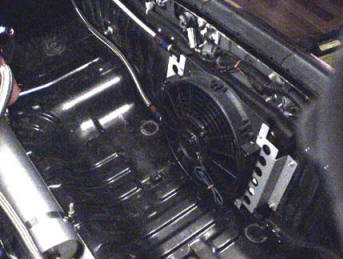
the oil gets over heated the clutches act different
and consistency is important in road racing. To
utilize the stock transmission oil pump, you need a
complicated adaptor because the oil goes in and out
the same hole in the trans.
Notes: If you do run a 5-speed… the 6-speed dif can
be modified to fit. Also, if I needed to pick one
set of gears between, stock, short gears, or a
combination with the three common sets of ring and
pinions; I would run the short gear set with the OE
ring and pinion. It has had the best average gearing
for the tracks you will encounter. This combination
is far better for road racing then OE, and if you’re
driving on the street it will still have the same
final drive ratio. I’m told that the aftermarket
ring and pinions are less durable then the OE when
used with high horsepower. The short gears even your
ratios and bring them down from 2nd to 4th. 1st and
5th stay the same. The ring and pinions lower
everything, making 1st unusable, and you still have
the poor 2nd gear transition. A combination of short
gears and the R&P bring your gearing way too low.
Weight- It’s not too difficult to get the race NSX to 2300 or 2400 lbs (Like our cup car), but most race classes require a heavier weight then that. I still take the time to trim the NSX, so that I can add the weight where it will do the most good. Earlier I mentioned the Fuel cell protection plate that doubles as a flat floor for better (under car) aero. It actually has a third function; it fits the race rule for weight: Between the axels and as low as possible. So when I need to add weight, I use ¼” thick steel plate (or thicker) instead of aluminum. This is an optimal location for weight, the NSX is not your typical car that wants a 50/50 weight distribution. It is designed to be closer to 40/60 especially with high horsepower and class limiting tires. Many useless things get removed when building a race car like power seats and AC, they will make up the majority of the weight loss. One of the best places to go next is the rear hatch, it’s quite heavy and sits high on the car. I don’t suggest replacing the front windshield unless you plan to replace it twice per season, because they fog quickly from rock chips. The OE glass is actually not too heavy. Another trick that a veteran racer showed me, was to use good and thick foam tape around the window seat, and then use the tabs to hold the windshield in place. Windshield glue is very difficult when removing a windshield. The original thought was really quick replacement (We always keep one in the trailer), but you would be surprised how often I remove it now that it’s easy, for working on something in the dash. I would also work on removing most of the harness and electronics. You can easily get 50 lbs here, but you better know what your doing. If you’re building an all out race car with aftermarket engine management, you’re better off just starting with a Painless brand harness for the basics. I’ve heard of people striping and acid dipping their cars for weight reduction, but that’s more of a cheating technique for All Stock classes like SSB or Super stock drag cars. It’s also been suggested (By those who have done this in the past) this seriously compromises the structural stability of the chassis, as it dissolves the seam sealing and gluing that bond the inner panels. I don’t suggest it. You can however take the labor intensive time to chip away all of the brittle floor insulation and you can scrape off the undercoating. Put all of this material in the same garbage bag and weigh it… you will be surprised at the results. Another place to look is the flip up headlights (Have you ever lifted this assembly?) Unfortunately I’m not sure if a lightweight and low cost solution exists. I have drawings for the bracketry that hold my –40lb solution, but they are also labor intensive. (This may be an exaggeration, I never weighed them)
Air filter- I have heard that tests have been performed with various air filter styles, and none of them drastically out perform the OE box. In the same breath they say “and the K&N can allow more dirt”. Hogwash! I have personally seen minimal improvements with the K&N and even more with no filter at all. If your too lazy to wash and lube a race filter, then you should probably use the OE filter… I however need every horsepower I can get. As for the filter housings- of course you’re not going to see an improvement on a stationary chassis dyno, ram air designs need movement. The design I’m fond of is the Cantrell ram air. I’m too poor to afford a pit bike cost worth of air filter components, but I think you will get the majority of the gains by utilizing the OE box with the Cantrell ram air nozzle. My thought is that the air still has to go through the same size filter regardless of the box it’s in… it does look nice though. (DALI gives you the choice and sells it this way for us non Ferrari owners).
Throttle Bodies- These were a logical test, when I discovered that our 300 RWHP version of the stock 3.2 would draw a small amount of vacuum again at high rpm. This tells me that I have a restriction limiting optimal air flow. I tried removing the air filter and that didn’t solve it. I then spent 20+ minutes swapping out my throttle body with the beautifully machined unit I got from SOS. The 20+ minutes was due to using dyno supplied tools, and changing over some of the emission/cruse control parts from my race modified unit. I did see gains, but they were minimal. So minimal that it could easily be written off as a change in conditions due to the 20+ minutes. It also didn’t solve the mystery vacuum clue. This leaves three places that could be restricting optimal air flow; 1) The intake manifold 2) The head flow or 3) the valve train. The intake manifold is already improved and I doubt it’s restricting flow (I will cover this later). The heads also flow about 3% better within the stock specifications and the rules. For now I’m guessing the valve train. So this is my current project that will also be discussed later in this engine section. Though our 300 RWHP out of a stock spec engine is impressive, it’s far shy of the hp that my supercharger engines have made. I’m guessing the throttle body would be better suited for higher HP. I almost forgot to write about those cruse control components I mentioned earlier. On the side of the Throttle body is a stepper motor that has the ability to close the throttle plate even if your foot is planted on the floor. For a self demonstration have someone hold the throttle wide open (Engine off!) and reach in and push the throttle closed. You will see that its not directly attached to the throttle cable, it’s only spring loaded. This does close some on it’s own, so I remove this assembly and tig the throttle bell directly to the butterfly shaft. However, this assembly is what your throttle position sensor is attached to, luckily the NSX has two TPS’s. I extend my harness 6” or 8” to reach the other TPS on the lower left of the throttle body. I also remove the vacuum idle adjuster. New thought- Don’t forget to plug any vacuum lines.
Intake manifold- First
remove and plug the EGR, this is an emission
component that also helps heat the manifold in cold
conditions. Not needed or wanted in a race car, even
the smallest amount of Carbon Monoxide entering the
intake will reduce the burnable oxygen content and
reduce your power. The next item to go is the
butterfly assembly plate known as the variable
runner system. This vacuum controlled contraption
along with v-tech is an innovative concept that in
theory will give you both long and short intake
tracts for better high and low RPM horsepower.
Unfortunately when removed both high and low RPM
horsepower are improved. In trying to figure out
it’s intent, I believe Honda engineers implemented
this device for better drivability. Better
drivability is defined not only in terms of
reliability, or fuel mileage, it’s how smooth a car
functions or starts etc. This assembly may have also
played a roll in emissions. The reason for its
over-all performance loss is likely related to its
restrictive throttle plates that would
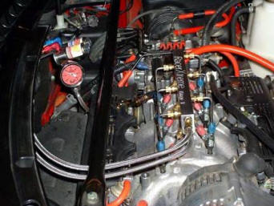flow
less air then the manifold runners. In addition the
plate assembly is less then smooth and would surely
cause more turbulence then smooth runners. The
turbulence slows the potential air flow into the
combustion chamber. The other notable draw back is
that this device is vacuum controlled and not
designed for boost applications. Anyone with
aftermarket turbos or superchargers will benefit
from removal. It’s a simple modification:
-Remove the intake manifold (The gaskets are
O-ringed and re-usable).
-Turn the manifold over and remove the nuts
retaining the belly of the manifold. (try not to
damage the paper based gaskets, it may be a good
idea to have new ones on hand)
-Slide the Variable runner assembly off the studs
(Protect the gasket here also)
-Next remove all the studs. (A stud puller will work
best for potential reusing them in the future, but a
pipe wrench, vice grips, or channel locks will work.
-Now cut one of the gaskets so that it only makes an
outer ring to seal the belly pan without the runner
assembly.
-Measure for the length of bolts you will need in
each location to fasten the belly without the runner
assembly. -Take one of the studs and go to the
hardware store to buy exactly what you need. (They
are obviously metric- 6mm if I remember)
-Now assemble using some Honda bond, vacuum leaks
cause many problems especially with Nitrous.
-Then re-install the manifold, and anything else you
removed.
One step further but will require heavier tooling,
is to remove the divider wall on the inside of the
manifold. Be sure to smooth out all of the
transitions. This combination will maximize your
stock manifold. If porting is allowed you can port
match and smooth out the runners. I have been
threatening to make a sheet metal manifold… even
started the drawings. Maybe soon.
If Nitrous is your thing, the threaded boss for
holding the throttle body strain relief is a good
permanent location for a single fogger nozzle. If
you want to go big and don’t mind destroying an
intake manifold, the EGR ports act as a great
location for a direct port nitrous system. (You will
however need to mill the top off the manifold).
Don’t forget to plug any vacuum lines.
Balancer- I’m not sure
if this issue has been previously addressed, but I
have seen many harmonic balancer failures with other
NSX’s, and one of our Cup cars. Some engines are
internally balanced and some use the balancer to
counterweight the rotating assembly of the pistons,
rods and crank. Externally balanced engines need a
balancer. Internally balanced engines do not… hold
on and read more. The NSX is very well balanced from
Honda, but can be improved even more. On an
internally balanced engine like the NSX, the
balancer is not really a balancer and serves no
balancing function. It’s a pulley that’s weighted
like a flywheel. Flywheel weight is used to retain
load torque when on or off the throttle by utilizing
the inertia weight that wants to keep spinning. but
it takes more torque to get and keep that weight
spinning, thus sacrifices overall torque and
throttle response. Like a weed eater, it spins at
high RPM with little torque and would stop if it
encountered a finger sized twig. If you put a
flywheel weight on it, it would torque through that
twig… but may need more torque to get to speed. The
other purpose of the Balancer is to absorb harmonic
vibrations, tiny vibrations are measured in
frequency like sound, and all high rpm motors will
have increased activity at a specific frequency.
This harmonic frequency can do damage similar to the
results seen from detonation or cavitation, or
simply explained as more damage then seems feasible.
The way the balancer combats this Harmonic is by
insulating it with rubber. The balancer is made of
three parts; an outer and inner ring pressed
together with a thin
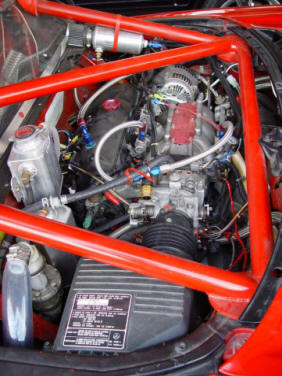rubber
ring sandwiched between. Similar to cutting a brake
rotor with a band wrapped around it. This is a low
cost way of combating harmonics within our rpm
range. You can also minimize harmonics within this
range by doing a good job balancing… as Honda does.
I think this balancer feature is there as insurance
incase time or unknowns change the tolerance of the
internal balance. Many race engines eliminate this
weight as a performance gain, without problems. In
fact other factors such as a flywheel, clutch, or
driveshaft. Would have a greater impact then this
balancer. In any pro level race car, this balancer
would be replaced with something more reliable. I
can tell you that all of the Famous super NSX’s you
know have replaced or modified this part to be
solid. On the World Challenge engine, I turn down
the outer ring and the compliant rubber, machine a
high tolerance centering lip, tap holes and bolt an
off the shelf 8-rib Vortech pulley for a solid part.
The reason- Heavy loads produce heat, heat melts the
rubber and causes the OE balancer to fail. The DAL
Motorsports cup engine had a balancer fail because
the alternator belt was tightened too much. It will
also eat up more horsepower. The tighter you go the
more heat you will produce. This is even more common
with the supercharged NSX’s everyone knows that when
the belt isn’t tight the SC slips and wont make as
much boost. I tend to only tighten the belt until it
stops making noise, and if supercharged I tighten
the belt while on the dyno, until I stop seeing a
rise in boost. I then feel how tight that is for the
next adjustment without a dyno. If you are doing
this without the dyno, lean towards too loose rather
then too tight. In fact tonight I need to make an
adjustment because my wife’s car is screeching at
start-up. Another way to increase your belt strength
is to go with more ribs. The cheapest way for
minimal improvement would be to use the Goodyear
Gatorback belt. They have a patent on a ribbed
design that gives more grip then the rest of the
brands. Most of the failures cause minimal damage;
Balancer, belt, and usually some cosmetic damage to
the front cover… But recently the balancer on Wei
Shen’s car (NSXCA President), separated in the
opposite direction towards the engine (Likely had
something to do being in a high G turn). Well it
went through the plastic front cover and made the
timing belt skip, bending valves, hurting pistons,
etc. I wont divulge the actual cost, but I will say
that if you are unfortunate this lesson can cost you
over $10,000 to fix it the right way.
Exhaust- The 3.0 manifolds are lacking compared to the 3.2 OE headers. So get them while you can… In fact you will see more then 2/3’s of the HP gain (on the dyno) with the 3.2 manifolds compared to aftermarket headers. Another interesting 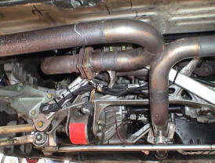note is that many, if not all of the marketed headers for the NSX are made by the same place. If you do go to the 3.2 manifolds you will also need the remaining 3.2 exhaust or aftermarket components designed for a 3.2. Comptech use to sell conversion pipes, but I’m not sure if they still do. The 3.2 manifolds are welded internally and this weld restricts its flow. My tip is to remove this bump with a die grinder and clean them before installation. If racing, we can make a good stainless steel exhaust that scavenges from each bank. Not recommended for the street unless you like tickets and dislike your neighbors.
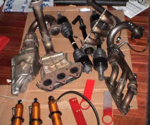
The next picture (right) shows
the 3.2 manifolds/headers. (3.0 are castings) The
ones on the left are the same as on the right,
without the insulation sheeting. See they are
headers.
This is a picture of the hand built Inconel headers
for my WC car from RTR.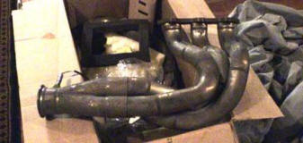
They are huge. If your running boost, use mufflers
with stainless steel sound insulating material. The
high heat and close proximity to the engine will
burn up anything else. I would also suggest that you
warn the dyno operator about the excessive heat, SC
or turbo NSX’s tend to burn up the dyno exhaust
tubes.
Valve covers- Nothing big here, but I can help solve the oil release problem many have found while tracking with early model NSX’s. While in VTEC, oil is rerouted up to the heads via an electronic solenoid valve. The oil pressure is used to push 24 pins for locking the rocker arm assembly into using the higher lift cam lobes. Like the oil that goes to the bearings, the oil is free to seep out of all the gaps and flow back down to the pan. This oil can seep faster then it leaves the head so at certain tracks that have conditions where you sustain VTEC for extended periods of time the heads can actually fill with oil. Now, you will never pressurize the valve cover because the holes going to the pan are so large, but as I said the head can fill to a certain level. The rear valve cover is tilted lower then the front and when filled with VTEC oil, will allow unrestricted oil to flow out the tube going to the air filter bellows while in higher G right hand turns. In stock form you will just burn this oil as it goes through the throttle body. This is not good for performance, but at least it wont get you kicked off the track for oiling it. Those of us that do away with the stock configuration will usually get a breather tank, but that breather tank can overflow before much time can be spent on the track. Before I give you the fix, I want to state that many of you will never have this problem. It depends mostly on the track, and somewhat on the driver. It’s an easy fix, that doesn’t require modification of the valve cover internals. I had this problem and took my cue’s from the revised valve covers of the 3.2 (Honda knows they had a problem). They no longer exit the rear cover, they now exit on top of the higher front cover. I think I took it one step better. First I pull out the tube that sticks out of the rear valve cover (Its just a press fit). Then I tap this hole and install an AN fitting. Then I drill and tap the same location on the front cover for the same AN fitting. Use hose to connect the two. This will equalize them, if one fills first it will feed the other. I then use a bulkhead fitting through the PCV valve hole on the top of the front cover. A bulkhead fitting is an AN fitting with a nut and Teflon washer for sealing fluids. This type of fitting is required because the manifold is made of Magnesium. Magnesium would be difficult to weld… if you didn’t ignite it. Pure magnesium when it catches on fire will burn very hot until it’s gone. Not even a fire extinguisher will put it out, or at least that’s what I remember from science class. Interesting- Original drag cars used Magnesium for wheels until it was outlawed after flat tires would ignite the inextinguishable element that burned so hot it would melt steel. It also burns bright, so like a welder… don’t look at it. Anyway back to the bulkhead fitting; run a hose to a breather tank as high as you can get it, so that any oil would flow back down the hose into the valve cover (Even know the oil never comes out anymore). Boosted cars need to remove the PCV anyway. And don’t forget to plug any vacuum lines. By the time I’m done with this, I’m going to remember how to spell vacuum.
Ignition- This may be a
long one. The OE Honda ignition (Even the pre OBDII)
was ahead of its time. It tries to think of
everything. I have been curious enough to see three
different “LIMP” modes not counting the cold engine
failsafe. A limp mode is when the ECU sees something
wrong and sets a safer environment for the engine to
“limp” home and get fixed. You can monitor this
adjustment with a wideband sensor, heater control,
and an Air/Fuel ratio gauge. Lets say you stall at a
stop light, restart your engine and drive off. If
you didn’t turn the key back to off, all the ECU
knows is that something stopped the engine and
that’s not normal. So in the engines best interest
the ECU retards the timing, and riches up the air
fuel ratio to be safe. For the next 5 or 10 minutes
until the ECU verifies everything seems OK, your gas
mileage is cut in half and your performance is
decreased. Some limp modes start to reduce the rev
limiter also, one time we were limited to 5500 RPM.
And some of the limp modes require ECU resets, while
others require only the ignition key be moved to
off. I’m sure I have only scratched the surface of
complexity built into this computer. Many things can
trigger limp modes. I have seen stalls, temperature
readings, shorts, something unplugged, and something
like the VTEC solenoid not working. (I’m doing good
with the “VTEC”, I haven’t missed one since). I
would love to have access to the information within
this computer, and also be able to program it for
racing. This computer has all the capability you
would need for tuning, but the information has yet
to be shared (I guess because Honda doesn’t want
stock cars changed). Unfortunately this state of the
art ECU can not be used for racing. As a racer I
want to decide when to lift, or stop a race. 2/3’s
into the car’s build-up I chose to go with an
aftermarket ECU that when researched offered as much
and more then it’s more expensive competition. That
brand is AEM. First I want to say that the software
that was developed for this product offers any
combination you would ever need in tuning your
engine, enough choices to get most people in
trouble. Right off the start it fired up my engine
and got me to the dyno. The first pull saw about a
15 horsepower gain over the stock ecu, without even
tuning it. The problem I was seeing was a misfire
above 7000 RPM, you could hear it on the dyno and
see it as choppy fluctuations on the dyno curve. At
first I was excited to know that I had even more
power on tap when I solved this problem. I did
research on problems surrounding its use of “Wasted
spark”. The AEM doesn’t have enough coil drivers to
run all six of the NSX coils like the OE ECU, so
they fire two coils at the same time with one
driver. That’s common practice, but that means that
each coil has to charge and drop 2x what’s needed or
in my case at the equivalent of 16,000 RPM. I found
that Supra's have had similar problems with wasted
spark. I buy the MSD coil enhancement wire it up as
described in its instructions, but it wont work.
After a call to MSD they think it’s because of the
wasted spark, this was an issue that required me to
reroute my coils in series rather then parallel, I
chose not to hack my harness until I get to the
bottom of the problem, so I had my cable department
make a few harnesses for me. In addition to the coil
routing, it turned out the signal coming out of the
AEM wasn’t what the MSD is looking for. After some
help we wired the MSD to the OE ignition module, and
were now ready for another run. Success this helps,
but it’s only a bandage and not a permanent
solution. Most of my missing is gone, but not a full
100%. I think a great solution will be to also use
(3) MSD twin blaster coils (made for GM engines) and
use two sets of good plug wires designed for the
VTEC 4 cylinder engines. A better coil and coil
enhancement. Since my trouble shooting started AEM
now mysteriously sells a coil enhancement product
that they recommend for this application. For now I
can’t help but to recommend the AEM because of its
price, hell I already solved their problem.
Cam Gears- The
adjustable cam gears are expensive for the NSX
because three of the gears are different, and one of
them acts as a trigger for your ignition pick-up.
Expensive, but be grateful that someone makes them.
I have talked to most of the manufacturers who at
one time made them, but dropped this part from their
line because the volume wasn’t good enough.
Cam gears not only allow you to change the
centerlines of cam’s, they allow you make the cams
equal to each other. The 4 cams in the NSX are
ground and indexed by a keyway, they then sit in
bored cam journals in the heads, the heads are
surfaced and sit on the block that’s also surfaced.
The cams need to work in relationship the machined
or casted pistons, that connect via a bored hole, a
machined pin, two bored holes in a rod, and a ground
crank, sitting in a bore in the block. All of this
is indexed by a series of gears on the cams and the
crank via a ribbed belt. Sorry you had to go through
that read, but it illustrates all of the tolerances
that can stack up to give you different cam
location. The odds of having all four cams where
Honda preferably wants them is very low. This is one
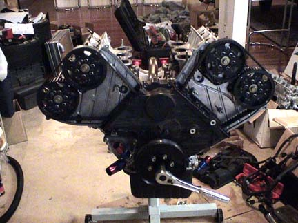of
those variations that randomly make engines
different in horsepower. Now go mill your heads or
deck the block… you will be no where near even with
the cams and bank of cylinder flow. The adjustable
cam gears allow you put each cam where you want it
on a particular engine. Degreeing the cams on the
NSX is very taxing. First off it can’t be done in
the car, the engine needs to be on a stand.
Degreeing the cams take me 3 to 4 hours… I know you
may be superman and you can do it in less time, but
I am self proclaimed anal about getting the cams
exact. To start with you need to remove the
balancer, valve covers, plugs, front covers, belt,
and cam gears. Install the new adjustable cam gears,
new belt and lower front cover. Followed by a large
degree wheel (Mine happens to line up with the
pointer on the cover. You may need to install your
own pointer. Then screw a hard but rounded piston
stop in the number one spark plug hole. The stop
will allow you to rotate the piston until it bottoms
out in the clockwise and counter clockwise
directions. Document the degree wheel readings at
both crank rotation extremes. This will now allow
you to adjust the degree wheel center to be exact.
Recheck your work. This is how you get the exact
center of the crank. If you just measure the piston
at top dead center, you will notice a dwell and
multiple degrees of crank rotation without piston
movement. Now remove the piston stop. Install a dial
indicator on the rocker arm of the number one
cylinder (This is another special tool because of
the depth and inconsistent surface for mounting),
and bring your #1 piston to top dead center. Now,
the NSX has three different cam lobes, the only one
your interested in is the bigger center lobe that
you will be using when in VTEC. Unfortunately this
means you need to be in VTEC on the engine stand
while your Degreeing the cams. First you will need
to plug an oil port in the appropriate head, your
manual will better describe where. I use a very long
bolt with a big red zip tie on it, because if I
forgot that bolt in the engine I would likely be
building a replacement. Then remove a plug on the
side of the head. Another special tool is needed
here, I made mine using an AN fitting, hose, and a
male air hose connector. You will need regulated air
pressure for pressurizing the VTEC. What the manual
doesn’t explain is that first you will need to
squeeze oil in that hole in the side of the head.
This is how I know that most of all the NSX engine
builders have never degreed an NSX cam (Not
including Comptech or RTR), I called around to find
out why I wasn’t getting VTEC… nobody knew. Anyway I
put two and two together to figure out that a system
designed for oil wouldn’t seal with just the air. So
I used a gear lube bottle with non synthetic 20/50
oil, I squeeze oil in, hurry up and screw the home
made fitting in, pressurize the system and rotate
the cam near the highest visible point on the cam
lobe. Note that before you pressurize, make sure the
cam lobe your working on is on the base circle and
not on a lift portion of the lobe. If the rocker is
lifted the VTEC pin will not engage. All of this
should be done quickly, and quickly disconnect the
air pressure as soon as the cam lobe is at the high
point. The spring pressure from the valve will stop
the pin from going out of VTEC. The reason for the
rush is all that oil seepage I mentioned in the
valve cover section. Now that it’s in VTEC (I typed
vtech a couple of times since the 1st post, but
caught myself), you need to zero the dial indicator
at the highest point of the lobe. (Remember not to
rotate the cam all the way around, or it will come
out of VTEC) When you get this exact, rotate the
crank counter clockwise until the dial indicator
travels about .100” before peak of the cam lobe.
Then rotate the crank clockwise (as if it was
running) slowly and smoothly (A long breaker bar
helps) until you get to exactly .050” before peak
(Or the zero on the gauge). If you pass the .050”,
you need to rotate back to .100” and re-approach the
.050”. This is to eliminate any slop and to get an
exact reading rotating as the engine will run. When
your comfortable with how exact this is, look at the
degree wheel and jot down the number. If the pointer
is in the middle or I actually divide the space into
quarters, then note that also. Now rotate the crank
slowly and smoothly past the highest point (and past
zero), to .050” after the highest point exactly.
Same thing if you go past .050” you will need to
rotate counter clockwise to zero or more and get to
.050” while rotating in the right direction. Jot
that number down then add the two numbers and divide
by 2 this will equal the center line of this cam. If
it equals 110 degrees and you want 104 degrees you
will have to adjust the cam gear 6 degrees to get
here. Now to complicate things the crank is a 2 to 1
ratio, and to further complicate things the bank of
cams on the other side will require an opposite
direction of rotation to go up or down in number.
Not too important if I didn’t describe this clearly…
you will understand if you do this. Not done yet.
Now that you know what you want to adjust to, you
move the cam gears by loosening the multiple
retaining bolts enough for the assembly to slide,
then remove the small screw that acts as a locater
for estimated cam adjustments. Now rotate the cam
using a wrench on the center cam bolt. Hold the
wrench with resistance in both rotation directions,
or sometimes the load of the valve spring will
quickly force the cam to rotate. (This would cause
you to start over) Align the hole that best
represents the choice you made, and screw in the
alignment bolt. Now snug the retaining bolts to
remove any slop and they securely hold the assembly
from rotating. Unfortunately this is really high
tolerance and due to fabrication tolerances and the
slop built into the cam gear locating holes, you can
have between a 1 and 3 degree variation from where
you thought you were going. (This depends on where
the pin was when you first started). Now you need to
re-zero the dial indicator (if moved), and recheck
at .050” before and .050” after zero. Your numbers
should be different, added and divided by 2. The
number may or may not be what you want because of
the slop. If your lucky and close to what you want,
you can loosen the bolts and try to maximize the
slop in the proper direction. If your not lucky, you
need to go to the next hole. Again you need to
re-zero the dial indicator (if moved), and recheck
at .050” before and .050” after zero. If you did
move holes you will likely have to work with the
slop for another pass, or even move back to the
first hole because that will get you closer. Now
start this whole process over including the oil, air
pressure, and the dial indicator on the exhaust cam.
When that bank is done remove the long bolt with the
big red zip tie, put the bolt and crush washer back
in the side of the head… then move to the other head
and make those cams exactly the same. The number 5
cylinder has the same top dead zero, so the degree
wheel doesn’t need to move. This is a very tedious
process and you might be tempted to say well that’s
close enough. Give yourself enough time and talk
your self into not taking short cuts (before you
start). This would also be a good time to adjust
your valve lash. Another unfortunate with the NSX is
that if you want to change your cam timing while the
engine is in the car, I would only do it in an
emergency because you cant check your work, (and it
wont likely be where you think it is). This is why
you will need to experiment on an engine dyno, or
listen to advise from someone you trust. The
centerline is important because it dictates how much
overlap you have between the intake and exhaust.
This amount can effect the drivability, power,
mileage or even if it runs. The proper overlap will
scavenge and help flow. I want to check my notes
before I publish where I think the stock cams should
be. I will say that I have seen as much as an
8degree variance between cams, and 6 degrees from
where the centerline should be. I usually see an 8
hp gain on a stock engine, and more can be gained on
performance engines. The big potential gains are
from changing the centerline. Now some of you
experienced engine builders are going to find this
hard to believe… In a high hp supercharged engine
(over 500hp), with Comptech cams in the stock
location. After testing and degreeing with help from
someone that has lots of experience with this set
up, I moved the centerline as much as 14+ degrees
and found 100 horsepower. My guess is that these
cams were not designed for a boosted application.
Note; Here’s a warning I ultimately ruined that
engine, because I never took the time to check the
piston to valve clearence after moving the
centerline 14 degrees. (I did put more clearence in
the aftermarket pistons, but it wasn’t enough) Oh,
don’t forget to back each of those cam gear bolts
out one at a time and put blue lock-tite on them. I
made valve covers for the dyno that seal the oil,
but expose the cam gears. There is some debate about
exposing these in the car, but the NSX wouldn’t make
them that visible anyway, so it’s probably not worth
it. That was longer then I thought it would be.
Timing Belt- This can be done in the car, but it’s a pain. The main thing I want to convey here is that the spring used to tension the belt is not a universal solution. If you are using better springs, higher lift cams, or even have more resistance then when new, you risk the possibility of slipping teeth on the belt. This equals bent valves, money and down time. Some big teams use 10K devices to adjust perfect belt tension, you have the same problem here like the balancer belt. Too tight can rob power, and destroy parts, too loose will destroy parts and rob power. Either way I’m sure the spring is too loose for my applications. My other problem is using one bolt that applies tension by rotationally stretching threads, to hold and locate the slotted tensioner pulley from moving linearly. (Not the smartest engineering in this area) Measure the distance that the spring would stretch, armed with that info go to Home Depot and buy a $3 galvanized turnbuckle (Very small), also buy the appropriate nut for the right hand threaded side of the turnbuckle (For permanently tightening it) (Maybe the least expensive insurance you can buy for an NSX). When tightening the belt lightly snug the center bolt and install the turnbuckle where the spring was located. The turn buckle has very fine left and right handed threads, so this makes it very easy to slowly and accurately adjust the belt tension. In addition this aids the tensioner from never moving back. A side benefit is that you can carefully back out the main tensioner bolt to put blue locktite on it (Check the torque specs). Now put a drop of locktite on the turnbuckle nut and tighten it. I apologize this doesn’t tell you how tight to make it, but that’s feel.
Head Gasket- The 3.0 head gaskets are not made of the best materials and have had problems that mostly seem to develop when overheated. If they start leaking that means the heads need to be removed, and that’s usually best if done out of the car. So if your ever doing engine work, I would replace the head gaskets. Honda is aware of this problem and has revised the head gaskets for the 3.2 using a layered steel shim type. The 3.2 version is thinner, and will raise your compression in a 3.0 from 10.2 to 10.7. I wouldn’t recommend this unless you can adjust your engine management. If you want a stock or different thickness or different bore size, Cometic has the drawings and can make any thickness you would want (Above .030”) and any bore size within 7 days. They also emboss around all of the water and are better then the OE. They cost near the same price. ~$200 for a set. I can order for you. With OE ECU’s on any car, I wouldn’t suggest more then 10:1 compression on pump gas, but with ECU adjustability you can supercharge 10:1. Oh when building my wife a new engine for boost, I added gasket thickness to reduce the compression rather then change the good pistons. Another suggestion you wont see in a Honda book, is to spray the head gaskets with a gasket tack/sealer. If you can’t find this product at your local auto store, Dodge sells it. Another part to spend your money on is ARP head studs, this will improve the clamping force. If you don’t buy studs, you should replace the OE bolts, clean the threads and don’t torque them dry. Do what’s listed above and you will never have gasket problems… provided your sleeves don’t move too much.
Heads- This is a very
important subject and a necessary mod when ever you
have an engine out. After the second engine loss, I
did some further forensics. My original assumption
was that like before the engine must have spun high
enough to float the valves and contact the pistons.
I didn’t disassemble the first engine, but this next
one I built and had an attachment to. Sure enough
everything was junk, the pistons hit the valves, the
valves bent, and since we have very little squish
area the hard valves pound the heads, and pound the
piston. With no where to go the piston rotates and
cracks the block. This was a special engine, and sad
to loose, only the crank and some of the rods were
salvageable. Anyway after over revving happens the
valves break or get so deformed that the springs,
retainers and keepers are usually loose in the head.
No different this time, but this time I looked very
close. None of the valves made contact with the
pistons other then the one cylinder. That’s not
really possible if it over revved. So now I know
that the valve train failed, and one of the
retainers has a clean break in two. I got on the
phone and talked to a couple of valve train experts.
The first one said that yes, the NSX keepers are
single radius grove, stamped steel, and the same
part number used in the B-14 or 18? engine. They
distort and fail. He also mentioned that his company
makes hardened machined ones. The NSX valves have
very thin stems, saving weight for high RPM. This
small stem requires a small keeper. The second
expert I talked to said yes the retainers fail a lot
of the time with the Honda engines he builds, and he
makes Titanium retainers. But I would need custom
for the NSX. I’m not sure what part to blame, all I
know is that I replace both in every engine I build…
even stock. If you need them give me a call. Oh, I
looked at the junk head I didn’t disassemble earlier
in the year… same thing, not an over-rev. The 3.0
valve springs are not too good, Honda changed them
to a double spring replacement on the 3.2, and they
are not bad for a street car. I change them for
aftermarket, especially if using custom cams. I can
get good springs at good prices. The 3.2 also has
bigger valves that flow considerably better. .040”
larger valves can flow as much as 20% better. Some
new heads I have at the shop now have larger valves
then the 3.2- I will tell you how they work. I’m
also anxiously waiting for new custom cams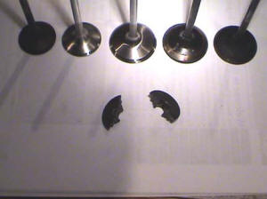
from SOS. The Comptech cam is a reground OE cam with
OE lift and potentially different, ramp, duration
and/or center line. Your average engine builder may
not be qualified to build an NSX engine, And I
defiantly wouldn’t trust most mechanics. The NSX has
a few head components that can be missed during
assembly. I have rebuilt failed engines with VTEC
pins missing, and missing O-ring and oil transfer
sleeve under the cam journal cap. Most of the 3.0
owners are in luck, The 3.0 heads with 3.2 valves
can easily be made to out flow the 3.2 heads. I’m
going to tip toe through this subject a little ; )
When putting 3.2 valves in a 3.0 head you can
machine the bowl just like Honda did, but better.
But even more gains can be made by de-shrouding the
intake valves like Honda did but better, especially
good flow when you can go out to the 3.2 bore size.
From right to left; 3.0 intake valve, 3.2 intake
valve back cut, and the new larger valve. Below is a
cracked retainer.
Block- The 3.0 block has steel sleeves for the cylinder bore, and the 3.2 has an aluminum bore that is Nicasil plated (Or Hondas variation of Nicasil). The 3.2 is an awesome improvement. This process is used on Indy engines and high performance motorcycle engine. This technology is where the whole performance industry will be in the future. The concept is that the cylinder walls now have closer expansion rates as the piston material, so tolerances can be made tighter without sticking a piston, and the tighter tolerances reduce power loss. Another benefit is that the aluminum walls dissipate heat at a far greater rate allowing a leaner more efficient engine that burns less gas and makes more power. One small difference is that using this technology may require your engine builder to do things that go against what he learned over the years, like piston to wall clearence. Another thing you need to be conscious of is the piston, to utilize the OE clearances I would use a brand like Mahle, if you use the common performance pistons like JE, Ross, or Weisco. You may have to use normal tolerances. I have been exposed to this process from my motorcycle days, if you oversize the cylinder walls more then a couple of thousandths, the walls should be re-plated. I warn you that every plater will say that they can do this, but I cant tell you how many failed motorcycle engine I have seen from failed plating. You can bet they wont eat your loss. It’s a gamble really, when I moved to Georgia I needed a new location, asked questions, used my gut, and got lucky. Everything is the same on the 3.0 and 3.2 blocks, even the crank journals. The only difference that will affect bolt-on’s is the bore size.
Cylinders- If you view a running engine with inferred heat detection, almost all of the heat is at the top of the cylinder wall, so I’m guessing this is why we have an open deck design for better water flow and heat absorption. But this open deck has horsepower limitations. Many deck strengthening variations have been tried. I don’t care for the 1 part insert designs, because of what I know about fitting something that has to be perfect with internal and external dimensions. This perfection needs to be maintained on the block and the insert it self. With zero tool deflection or wear. Even the thin but large shape lends it self to difficult tolerance. And I’m sure grinding is out of the question.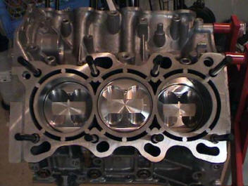 The next choice is sleeving with a shape that spans the deck gap. I like this design because each cyl is separate and requires a round cut. Both the size and shape make the tolerance easier. This application would be best for high horsepower drag racing, and maybe street driving. The sleeve material adds strength, and the deck support is superior, but cooling gets reduced both at deck area because less water can flow there. If your running a 3.2 you will also have less cylinder wall heat absorption because the materials have changed, and wont benefit from the current technology for tighter piston to wall clearence. For street and drag racing this wont likely matter, but for road racing I would do my best to retain the aluminum cylinder walls. This application may be best solved by pinning the gap with a tight slip fit dowel made from aluminum. The holes are bored with a CNC machine using a flat bottom end mill, so that a slightly chamfered dowel would have a nice floor to sit on. The block is then decked with the pins for a perfect surface. The heads will hold the dowels in and they can be free to expand or not expand. My idea was to retain as much water flow as possible, retain the same 3.2 bore material, and to help the cylinder with the minimal support it needs from the deck. I can’t tell everyone to go do this because I have only done one, but I don’t think there are any holes in the theory.
Mains- Some people have seen main bearing failure with the NSX engine. My most reliable resource with high horsepower NSX engines suggests that they solved this problem with Billet replacement main caps. It make since… the NSX engine i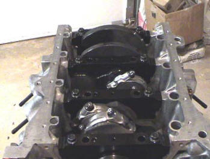s well built like most top fuel drag engines with 6 main bolt. The difference is the material; the NSX engine has cast caps. The 6 holes in this cast cap contribute to its weakness. Because of the price, and my past relationship with arguably the best main cap builder in the world, I decided to have my own caps made (Nicer and less money). They are very nice parts that retain the OE oil passage differences rather then making them all the same, he even CNC’s the partial threads for easier disassembly by using the bolts for leverage. Some of the famous drag racers you know use my caps for over 1400 HP. If you do this mod, find a competent shop that can line bore and line hone. If you cant find a shop with a line bore, they can be honed without one… but the operator will need to hone very slow, or the harder cap material will push rather then cut. This will move the crank center up in the block. That’s not the end of the world, but it causes additional complications like piston height or seal alignment. With the caps I would suggest APR studs.
Rods- Rods are theoretically another weak link, and the stock rod bolts are likely torque to yield and are not meant to be re-used. Torque to yield isn’t made to stretch back, and is usually torqued by bringing it to a specific torque then rotated X amount of degrees (90 degrees is common). Normal bolts are just set to a certain torque. the rods you see above have the ARP wave bolts, they require some machining but are the strongest. If you went this far, you are using aftermarket pistons and will need to bush the little end to be free floating.
Boost (World Challenge) - First I want to help my crusade of stopping people from using boost pressure numbers as a barometer of potential horsepower gains. Boost is irreverent… Cubic Feet per Minute of air flow, being able to sustain that air flow, and at what RPM is what makes power. You can have a tiny little turbo making 30 lbs of boost with 500 CFM, and a supercharger with 7 lbs of boost that makes twice the horsepower because it flows 1100 CFM. Boost is awesome! It gives great power all of the time. I’m a proponent of supercharging vs. turbo's but maybe that’s because of my ignorance. Turbo’s can in fact make maximum horsepower, so for drag racing within a certain rule set a turbo would be my choice… Oh I would probably use them for salt flats also. But I can already make more power then I want with a supercharger, and this to me is a better choice because; Less heat, less lag, better lower RPM power and most of all (Here’s where the ignorance comes in) a supercharger is more reliable and easier to tune. Not to say that you shouldn’t go out and buy an Audi, because they have spent countless hours tuning for drivability. But I cant tell you how many people I have witnessed with problems… so I never felt it was necessary to go that route. In the NSX the turbo’s have to go below the engine, and not one of the turbo manufactures suggest that. I can make 625 at the wheels reliably with a modified SC NSX engine, and could easily make another 200 with a supercharger change. Why would I want to mess with a Turbo? If your going all out I would also suggest water to air intercoolers vs. air to air, as big as you can get. Water volume is the key so you will need to get creative with the hose size and water pump you use. After a certain temperature the gains from cooling can equal a 50% increase to the power added- so if you made 100 hp more you have the potential to make another 50 hp by cooling. The system developed for my WC car cooled the air to 5 degrees above ambient. I prefer to drive the SC with a small pulley, so it will bring me boost earlier in the RPM range, and even if you wanted to use only 8 PSI, you can just pop off at 8. The centrifugal SC is superior in efficiency and heat, it will also allow after cooling because it’s not sitting directly on top of the intake. The RTR designed location in my WC car requires you to remove a chassis brace. And is hard to work on. When using a cage this is not an issue, but then it won’t fit a street car. I would like to think that instead of finding a suitable place to locate the SC, you could remove the alternator and locate the SC there, and now have a much smaller alternator to locate… even buy a mini alternator if needed. Unfortunately that’s on the list like the sheet metal intake, they all take time.
Future and current projects- My current project is a super 3.3 N/A engine with stock compression that will make an estimated 350 at the wheels. This engine is being developed for the Cup car with parts from Science of Speed. I once worked for a famous engine shop that has a great history of world records in drag racing along with many magazine featured accomplishments related to drivable cars that were capable of great track times. This set my standards high, so if any NSX owner is interested in a project, I gravitate towards special projects regardless of the difficulty. A concept I have toyed with is a “Super Turbo” that used a gear increased centrifugal supercharger (for low RPM), that shared the same shaft as an exhaust driven turbine for maximum boost at high RPM. The blower shaft could go faster then the belt that drives it, by designing a one way drive similar to the rear sprocket of a bicycle. Another less challenging project is to build my own SC system with a bigger SC unit and after cooler (By bigger, I mean more CFM), I don’t care for the shaft drive, And the RTR designed location in my WC car requires you to remove a chassis brace and is hard to work on. When using a cage this is not an issue, but then it’s not a great choice for a street car. I would like to think that instead of finding a suitable place to locate the SC, you could remove the alternator and locate the SC there, and now have a much smaller alternator to locate… or even buy a mini alternator if needed. Unfortunately that’s on the list, like the sheet metal intake- they all take
The recommendation to Honda for the future NSX (With all due respect)- First fix the oil pump gears. Then fix the retainer or keeper weakness in the heads. Offer dealer sold performance parts… here in the US, the racing associations allow dealer sold upgrades even if they are aftermarket parts (As long as they have Honda part numbers). Examples would be Nismo, Mazda Speed, or Mopar. These dealer offered parts like cams, brake upgrades, and ground effects are why cars like the 350Z can out perform the NSX in pro competition. For improved performance the runner up would be Brakes, please offer 4 piston dual sided calipers or a factory offered aftermarket upgrade (Like the RSX). Use industry standard rotor sizes so that when the consumer upgrades, the cost is competitive with other cars. The number one improvement that would most improve the ability of the NSX in competition with cars in this category is (Both on the track and in sales); Horsepower potential. Yes the potential is more important then actual HP from the factory. The addition of boost via turbo or supercharger allows the customer to increase the performance for much less money and without engine removal. Offer programmability with your ECU and ABS systems, they are race breed equipment programmed for street applications. I don’t buy the need for secrecy to minimize OE re-programming. It takes me 5 minutes to change back to a stock ECU and still request warranty coverage. Honda is the #1 Japanese manufacturer for performance, and contribution in motorsports. Please continue the effort, and re-visit the supercar category.
All content and text are protected by copyright laws and are considered property of DAL Motorsports LLC. Content as a whole or part may not be copied without the written permission from either Rob Morrison or DAL Motorsports.